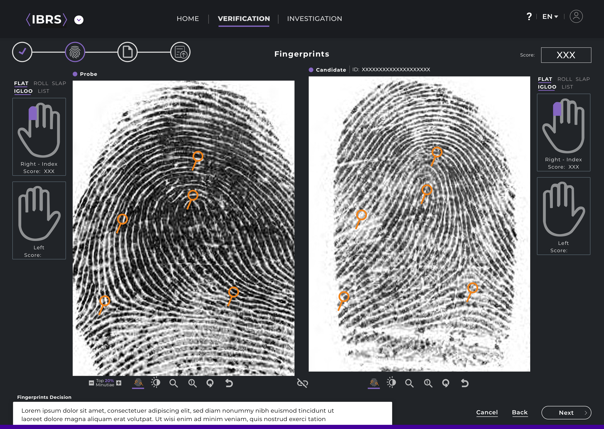
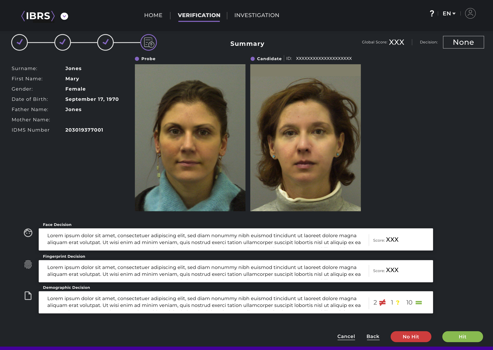
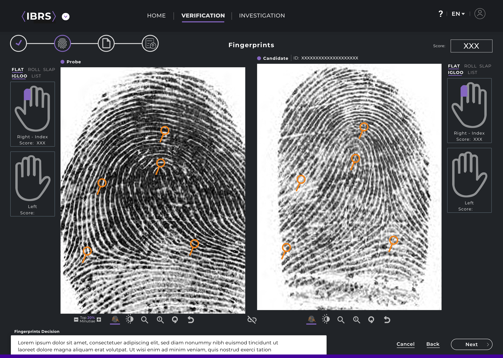
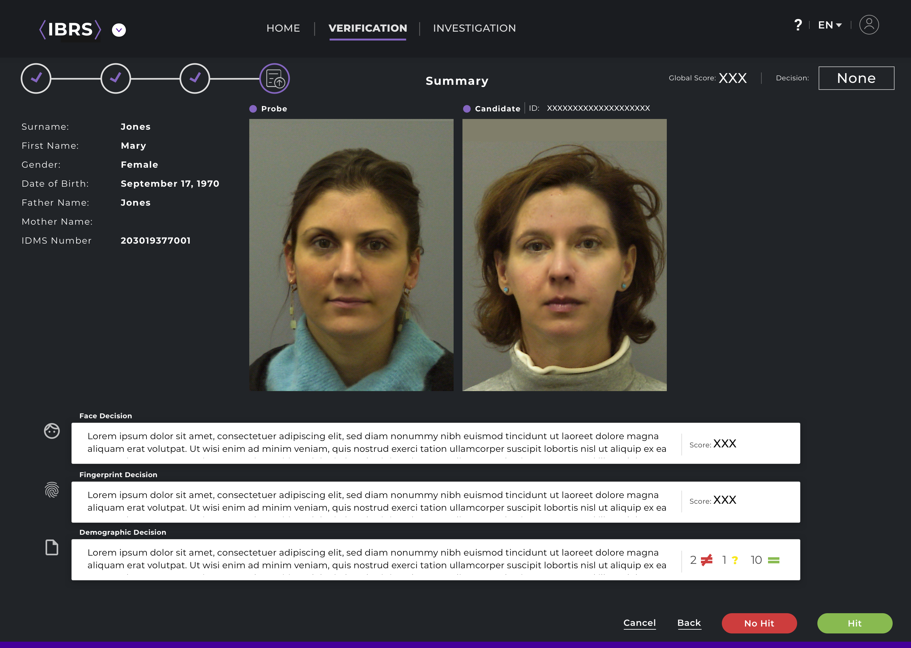

03. Design Process

Biometric identification using iris and fingerprint data is one of the most accurate and secure methods for verifying or recognizing an individual. These two biometric traits are unique, stable over time, and difficult to forge, making them ideal for high-security applications.
The goal of this project is to develop a highly secure, accurate, and efficient biometric identification system that utilizes both iris and fingerprint recognition to confirm or establish a person’s identity. By integrating these two complementary biometric modalities, the system aims to enhance authentication reliability, reduce identity fraud, and provide a robust solution suitable for high-security and large-scale applications.
Traditional methods of identity verification, including ID cards,
PINs, passwords, and single-biometric systems that rely solely on
fingerprints or iris scans, are becoming increasingly susceptible to
fraud, duplication, theft, and human error. In critical sectors such
as government services, border control, banking, and secure access
systems, the need for accurate and tamper-proof identification is
paramount. Unfortunately,
current systems often lack the reliability and security necessary
for managing large populations or high-risk situations. For
instance, fingerprint systems can yield false rejections or
inaccuracies due to factors like worn or dirty fingers, while iris
recognition systems may face challenges with image capture,
lighting, or obstructions. These shortcomings not only diminish
overall system performance but also lead to delays and operational
inefficiencies.
Additionally, the prevalence of identity fraud, impersonation, and
the creation of duplicate identities highlights the vulnerabilities
of single-factor identification systems, which can be easily
circumvented.
Consequently, there is a pressing need for a multimodal biometric
identification system that integrates both iris and fingerprint
recognition, enhancing accuracy, reducing fraud, and offering a more
secure, reliable, and scalable approach to individual
identification. Such a system must address the limitations of
single-biometric modalities, bolster identity assurance, and satisfy
the increasing demand for rapid, automated, and fail-proof
verification technologies.
The proposed solution is to develop a multimodal biometric identification system that integrates both iris recognition and fingerprint recognition to ensure highly accurate, secure, and reliable person identification. By combining these two unique biometric traits, the system overcomes the limitations of single-method authentication and significantly reduces the chances of identity fraud or errors.
It is for identifying major competitors and researching their product, sales, and marketing strategies. Using this approach, you can create solid business strategies that will improve upon those of your competitors.
Finding the balance between aesthetics and meaningful elements in the design is what I like to accomplish. Colors font and every pixel play a very important role in building an emotional relationship with the user.
ABCDEFGHIJKLMNOPQRSTUVWXYZ
abcdefghijklmnopqrstuvwxyz
0123456789
ABCDEFGHIJKLMNOPQRSTUVWXYZ
abcdefghijklmnopqrstuvwxyz
0123456789
| Type Style | Weight | Size | Height |
|---|---|---|---|
Heading 1 |
Bold | 40px | 45px |
Heading 2 |
Bold | 34px | 40px |
Heading 3 |
Bold | 28px | 35px |
Heading 4 |
Semibold | 22px | 30px |
Heading 5 |
Semibold | 18px | 24px |
Heading 6 |
Semibold | 16px | 20px |
| Primary Colors | ||||
|---|---|---|---|---|
| #430099 | #30a9d9 | #0f1113 | #ffffff | #2a3438 |
| Secondary Colors | |||
|---|---|---|---|
| #808080 | #635870 | #18191d | #eeeeee |
| Other Colors | ||
|---|---|---|
| #fe3833 | #80ba43 | #ffa500 |
 


